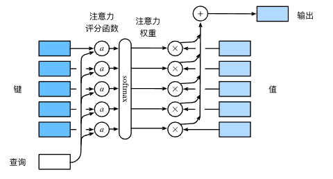
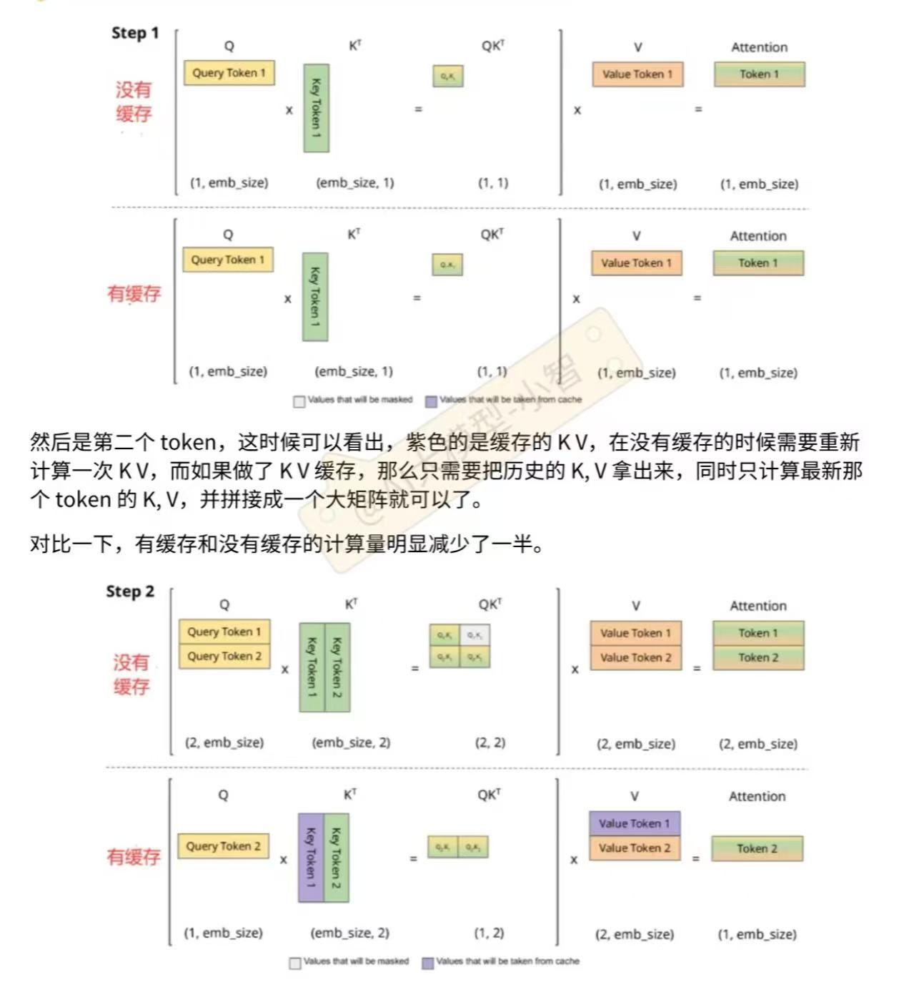
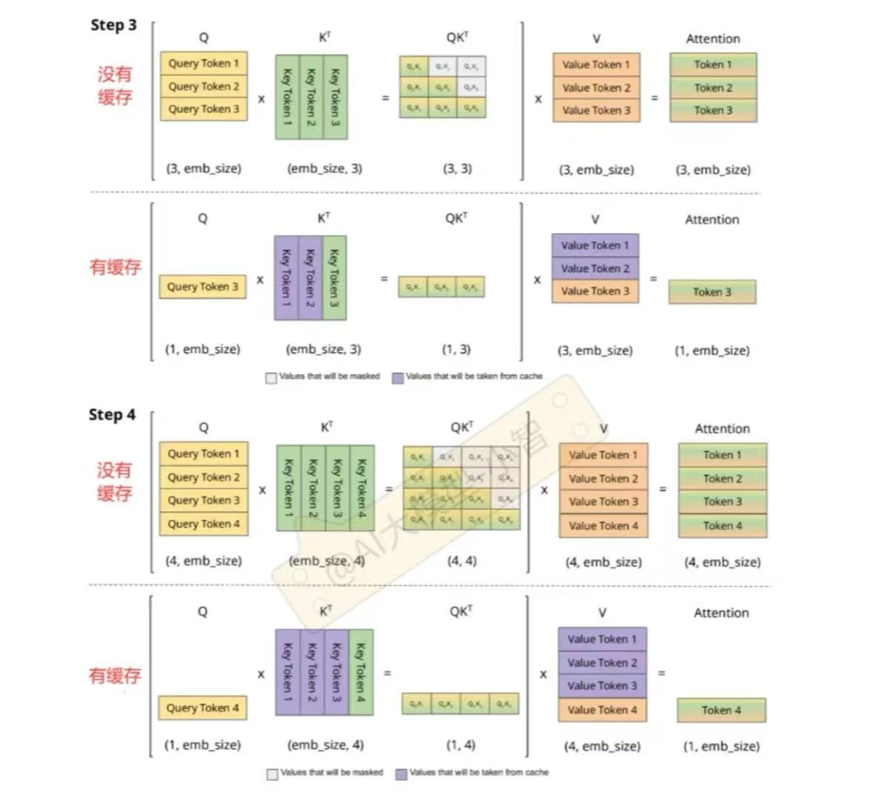

Attention-Transformer/
Attention-Transformer/
基础理论
attention机制

三要素：查询、键、值，查询和键生成权重（值的重要性），与对应值相乘，再汇总得到输出。
三要素的现实含义：查询相当于（自己的）需求，键相当于需求对应的（对方的）条件，查询乘键就是反映需求和条件的契合度，值就是最终显式化展现出的情况，即应用查询和键的契合度（权重）。
缩放点积：要求查询和键长度相同。

多头注意力
当给定相同的查询、键和值的集合时， 我们希望模型可以基于相同的注意力机制学习到不同的行为， 然后将不同的行为作为知识组合起来， 捕获序列内各种范围的依赖关系（例如，短距离依赖和长距离依赖关系）。 因此，允许注意力机制组合使用查询、键和值的不同子空间表示（representation subspaces）可能是有益的。
为此，与其只使用单独一个注意力汇聚， 我们可以用独立学习得到的h组不同的 线性投影（linear projections）来变换查询、键和值。 然后，这h组变换后的查询、键和值将并行地送到注意力汇聚中。 最后，将这h个注意力汇聚的输出拼接在一起， 并且通过另一个可以学习的线性投影进行变换， 以产生最终输出，这种设计被称为多头注意力（multihead attention）。

处理公式：

最终输出：

自注意力
查询、键、值来自同一组词元（同样的输入），实际是经过了矩阵线性变换得到的，自注意力的作用是建立输入序列之间的长距离依赖关系。
卷积神经网络、循环神经网络、自注意力机制对比

卷积神经网络和自注意力都拥有并行计算的优势， 而且自注意力的最大路径长度最短。 但是因为其计算复杂度是关于序列长度的二次方，所以在很长的序列中计算会非常慢。
位置编码
在处理词元序列时，循环神经网络是逐个的重复地处理词元的， 而自注意力则因为并行计算而放弃了顺序操作。 为了使用序列的顺序信息，通过在输入表示中添加 位置编码（positional encoding）来注入绝对的或相对的位置信息。
位置编码方式：基于正弦函数和余弦函数的固定位置编码，绝对位置信息编码（二进制），相对位置信息编码。
Transformer（自注意力机制）

Transformer的编码器和解码器是基于自注意力的模块叠加而成的，源（输入）序列和目标（输出）序列的嵌入（embedding）表示将加上位置编码（positional encoding），再分别输入到编码器和解码器中。
从宏观角度来看，Transformer的编码器是由多个相同的层叠加而成的，每个层都有两个子层（子层表示为sublayer）。第一个子层是多头自注意力（multi-head self-attention）汇聚；第二个子层是基于位置的前馈网络（positionwise feed-forward network），它由全连接层和非线性模块组成。
具体来说，在计算编码器的自注意力时，查询、键和值都来自前一个编码器层的输出。每个子层都采用了残差连接（residual connection），在残差连接的加法计算之后，紧接着应用层规范化（layer normalization）。
Transformer解码器也是由多个相同的层叠加而成的，并且层中使用了残差连接和层规范化。除了编码器中描述的两个子层之外，解码器还在这两个子层之间插入了第三个子层，称为编码器－解码器注意力（encoder-decoder attention）层。在编码器－解码器注意力中，查询来自前一个解码器层的输出，而键和值来自整个编码器的输出。
在解码器自注意力中，查询、键和值都来自上一个解码器层的输出。但是，解码器中的每个位置只能考虑该位置之前的所有位置。这种掩蔽（masked）注意力保留了自回归（auto-regressive）属性，确保预测仅依赖于已生成的输出词元。
问题
1. Transformer 网络结构
1.1 介绍 Transformer 的整体结构
Transformer 是一种基于注意力机制（Attention）的深度学习模型结构，其特点是不依赖于循环（RNN）或卷积（CNN）。整体架构分为 Encoder-Decoder 两部分：
Encoder：由多个相同的层（layer）堆叠而成，每一层包括两部分：多头注意力机制（Multi-head Self-Attention）和前馈神经网络（Feed Forward Neural Network）。
Decoder：与 Encoder 类似，但每层多了一个对 Encoder 输出的注意力模块（Encoder-Decoder Attention）。
Encoder和Decoder包含残差连接和层规范化。
1.2 介绍 Transformer 中 Encoder 和 Decoder 的结构
Encoder 结构：
（1）输入的序列通过嵌入层（Embedding）和位置编码（Positional Encoding）。
（2）使用多头自注意力（Multi-head Self-Attention）捕获序列中的相关性。
（3）后接前馈神经网络（FFN）。
（4）每层后有残差连接和 Layer Normalization。
Decoder 结构：
（1）输入（目标序列）先通过嵌入层和位置编码。
（2）第一个模块是 Masked Multi-head Attention，确保目标序列的每个位置只依赖于其前面的位置。
（3）第二个模块是 Encoder-Decoder Attention，捕获 Encoder 的输出与目标序列之间的关系。
（4）后接 FFN，再通过全连接层输出结果。
1.3 介绍 Encoder 和 Decoder 的区别，为什么这样设计？
区别：
（1）Encoder 处理的是输入序列。
（2）Decoder 处理的是目标序列，并从 Encoder 获取信息。
设计原因：
（1）Encoder 负责提取输入序列的全局表示。
（2）Decoder 生成输出时需要同时关注目标序列自身的上下文以及输入序列的上下文。
1.4 介绍 Transformer 的输入输出流程
（1）输入序列经过嵌入和位置编码。
（2）输入通过 Encoder 层逐步提取特征，得到上下文表示。
（3）Decoder 接收目标序列（带偏移的输入）和 Encoder 的输出，逐步生成目标序列。
1.5 Encoder 和 Decoder 的数据输入有什么区别？
Encoder 输入：原始输入序列经过嵌入和位置编码。
Decoder 输入：目标序列经过嵌入和位置编码，同时引入 Mask 来隐藏未来的信息。
1.6 Encoder 与 Decoder 之间如何进行数据传输？
Decoder的Masked多头注意力模块输出作为查询，Encoder 模块的输出作为 Decoder 的键和值，经过 Encoder-Decoder Attention 模块，帮助 Decoder 关注输入序列中与当前目标位置相关的信息。
1.7 介绍残差连接及其作用
残差连接是一种结构优化方法，在Transformer中，残差连接将模块的输入与输出相加后再进行层归一化（LayerNorm）。
残差连接的作用：
**（1）防止梯度消失：**在深层网络中，梯度在反向传播过程中可能会逐层衰减，导致梯度消失，影响训练。残差连接允许梯度直接从后面几层传播回前面几层，避免梯度信息在中间层丢失，从而缓解梯度消失问题，帮助深层模型更稳定地训练。
**（2）保留原始输入信息：**残差连接直接将输入信息传递到当前层的输出，确保模型在优化时不会丢失原始输入特征。这种机制可以让模型在学习复杂特征时，不会完全忽略输入的低级特征，从而提高模型的表达能力。
**（3）加速训练收敛：**残差连接使得每一层学习的是一个 残差函数（即偏离恒等映射的部分），而不是直接学习复杂的非线性变换。通过这种方式，每一层只需要学习相对于输入的小变化，降低了学习难度，加速了模型的收敛。
**（4）防止退化问题：**在深度网络中，随着网络层数的增加，模型性能可能会出现退化现象（即增加网络层数反而导致性能下降）。残差连接通过直接传递输入，避免了深层网络中的退化问题，使得 Transformer 可以堆叠更多层，提高模型的表达能力。
**（5）便于特征融合：**残差连接将每一层的输入特征与经过多头注意力机制或前馈网络处理后的输出特征相加。这种特征融合方式，可以帮助模型有效组合不同层次的特征表示，捕捉更丰富的语义信息。
1.8 Transformer使用什么激活函数？为什么？
采用GELU激活函数，它是一种平滑的，具有连续性导数的激活函数，形式上近似高斯分布，有助于减少梯队消失和提高网络标识能力，加快收敛速度。GELU的公式为x·P(X≤x)，其中x是均值为0，方差为1的高斯随机变量。
2. Attention
2.1 介绍 Attention 机制和公式
Attention 的核心思想是计算序列中每个位置的重要性分数，公式为：

Q: 查询向量（Query）
K: 键向量（Key）
V: 值向量（Value）
$sqrt(d_k)$: 缩放因子，dk代表键向量的维度，用于防止梯度消失。
2.2 Attention 中的可学习参数是什么？
Q、K、V 的线性变换矩阵是可学习参数。
2.3 Q⋅K 的数学意义是什么？
Q⋅K表示查询与键之间的相似性，即注意力分数。
2.4 Attention 中为什么使用缩放点积 scale？
（1）维持数值稳定：点积的结果会随着向量维度dk增大而增大，用缩放因子可以防止内积值过大造成的数值不稳定。
（2）保证梯度稳定：避免 Softmax 函数输入过大进入梯度消失区域，scale可以让输入值分布更平缓，使得 Softmax 的梯度更稳定，从而提高模型训练的效率和稳定性。
（3）减少维度带来的偏差：Attention 机制的核心思想是通过点积计算查询 Q 和键 K 的相关性。但当 dk 较大时，点积结果的值域会变宽，可能导致某些特定位置的权重被过度放大，而其他位置的权重被忽略。缩放因子能够对不同维度的影响进行归一化，减少因向量维度导致的偏差。
2.5 Attention 中为什么使用 softmax？
Softmax 将分数转换为概率分布，用于加权值向量。
2.6 Q 和 K 能否用同一个投影矩阵？
理论上可以，但这样会减少模型表达能力，降低泛化性和模型效果。Q和K的含义不同，需要不同的矩阵去学习不同的语义特征和表示，来捕捉它们之间更复杂的依赖关系。如果用同一个矩阵，模型很可能会失去区分能力。
2.7 为什么 Attention 可以堆叠多层，有什么作用？
多层 Attention允许每一层逐步提取和融合更高阶的特征表示，进而提高模型的表达能力和性能，捕获更深的关系，提升模型泛化能力。其中，残差连接+层规范化为Attention堆叠多层提供了保证。
2.8 Decoder 中的 Mask Attention 如何实现 mask？mask有哪些作用？
在计算Attention分数时，将被填充为0的Mask位置给一个负无穷的数，使得Softmax输出为零。
作用：使当前token的生成只依赖过去生成的token，保持自回归属性，防止未来信息泄露；在序列填充补齐时mask，使被填充的位置权重为0，避免无关信息参与attention的运算，使计算更高效；保证attention的局部性，token的交融是有限的。
2.9 手写Attention代码？
def attention(query, key, value, mask=None, dropout=None)
d_k = query.size(-1)
scores = torch.matmul(query, key.transpose(-2, -1))/sqrt(d_k)
if mask is not None:
scores = scores.masked_fill(mask==0, -1e9)
att_weight = torch.softmax(scores, dim = -1)
if dropout is not None:
att_weight = dropout(att_weight)
att_value = torch.matmul(att_weight, value)
return att_weight, att_value
2.10 Attention计算自注意力机制用softmax函数有什么不合理之处？
**（1）对大数值的敏感性：**Softmax对输入的数值范围非常敏感。当注意力得分（如点积得分）数值非常大或非常小的时候，softmax可能会导致梯度消失或梯度爆炸，影响模型的稳定和训练效率。
（2）计算复杂度：在计算自注意力时，对于每个输入的向量都需要计算一对一的注意力得分并应用softmax，这会导致计算复杂度较高，尤其是当序列长度很大时。Softmax操作需要对每个序列的所有位置计算指数和归一化，复杂度为O(N^2)，其中N是序列的长度。
**（3）精度损失：**由于softmax在数值较大或较小时的溢出或下溢问题，可能会导致计算精度的损失。尤其是在处理长序列时，这种数值不稳定性可能会影响模型的性能。
（4）硬性归一化：Softmax强制要求所有注意力权重和为1，这使得模型可能会过于依赖某些特定的输入部分，即使这些部分实际上并不重要。对于一些任务，可能不需要对所有注意力权重进行严格归一化，某些方法（如稀疏注意力）尝试引入更多灵活性。
（5）难以捕捉长距离依赖：尽管自注意力机制可以捕捉任意两个位置之间的依赖关系，但softmax的归一化方式可能使得远距离的依赖关系相对较弱，因为它们的注意力得分通常会较小，而被近距离的得分压制。因此，有时模型在长序列中的表现不如在较短序列中好。
2.11 计算Attention 为什么是用点乘而不是加法？
（1）点乘作为注意力权重计算时效率更高，虽然矩阵加法计算上更简单，但计算注意力权重时需要考虑所有可能的键和查询的匹配情况，计算量仍然很大，而点乘可以通过矩阵乘法高效实现这一过程。在大规模数据和复杂模型下，点乘具有比加法更好的性能。
（2）表达能力更强，点乘更能表示查询和键的相似度/相关性，如果使用加法，仅会产生一个新的向量，但没有量化两个向量之间的相似度。
（3）点乘更能让模型捕捉到向量空间中的结构性信息，衡量每个位置对其它位置的依赖程度，在训练时更加高效。而加法模型必须引入额外的非线性变换捕捉这样的关系，但是会增加计算复杂度。
2.12 简单谈下Attention的各个变体有哪些？
MHA：多头注意力机制，下面有介绍。
Sparse Attention：仅计算输入序列中部分元素间注意力分数，在推荐系统稀疏特征中常用。
Linear Attention：去掉softmax，先算K转置V，复杂度更加接近线性。
MQA：用于解决KV缓存的显存压力，缓解让所有Q共享一个KV，缺点是MQA对KV缓存压缩太严重，影响效率。
3. Multi-head Attention
3.1 如何实现 Multi-head Attention？
- 将输入分别通过多个独立的线性变换得到多组 Q、K、V。
- 在不同子空间下，分别对每组 Q、K、V 计算 Attention。
- 将所有头的输出拼接后，再通过线性变换得到最终结果。
3.2 采用 Multi-head 的好处是什么？
不同头可以关注输入序列中的不同特征表示，能获得序列不同的关注点，能学习到不同的行为， 然后作为知识组合起来， 捕获序列内各种范围的依赖关系，增强模型的表达能力。
3.3 Multi-head Attention 的物理意义是什么？
模拟人类对复杂问题的多角度关注。
3.4 采用 Multi-head 是否增加了计算的时间复杂度？
是的，但通过并行计算可减少实际耗时。
3.5 Q、K、V矩阵维度与 head 数的关系？为什么要对每个头进行降维？
假设输入维度为 dmodel，head 数为 h，每个 head 的维度为 dmodel/h。
通过降维的方式，减少矩阵参数量，处理起来计算量更小，计算量分散到每个头上，能更加保持计算高效性（实验证明），并且输出维度和输入维度保持一致。
3.6 Multi-head 与 Single-head 之间如何转换？
Multi-head 是 Single-head 的扩展，可以将多个 head 的输入合并为单一头来实现转换。
4. 位置编码
4.1 Transformer 中如何使输入序列具有相对位置关系？
Transformer 中没有像 RNN 那样的循环结构，输入序列的顺序信息需要通过位置编码（Positional Encoding）来显式地添加到每个输入向量中，从而使模型能够捕获序列的相对和绝对位置关系（特别是相同单词在不同位置时的情况）。
位置编码为每个序列位置生成一个唯一的向量，这个向量与输入的嵌入向量（Embedding）相加，作为每个位置的输入。
不同位置的编码具有规律性，能够体现相对位置信息，比如通过三角函数或其他编码方式，保证模型可以推断两个位置之间的相对距离。
4.2 Transformer 中的位置编码如何实现？
Transformer 原始论文使用 固定的正余弦函数 进行位置编码，公式如下：

pos 表示位置，i 表示当前向量的维度索引，dmodel 是向量的维度大小。
位置编码是一个固定的矩阵，不需要训练。
编码向量维度与嵌入向量一致（dmodel），方便与嵌入向量相加。
实现步骤：
- 对每个位置生成一组正弦和余弦值。
- 偶数维度使用正弦函数，奇数维度使用余弦函数。
- 编码结果与输入嵌入相加后送入 Transformer 网络。
4.3 为什么使用三角函数作为位置编码函数？
- 捕获相对位置信息：
- 三角函数的周期性和连续性使得不同位置之间的距离信息通过编码自然体现。
- 例如，两个位置的编码之间的点积会随位置差的变化有一定规律性，模型可以通过简单操作学习相对位置关系。
- 无需训练：
- 正余弦函数生成的位置编码是固定的，不依赖训练，减少了模型参数。
- 通用性强：
- 三角函数的数学性质（如加法公式）使得编码具有一定的对称性和可泛化性，能很好地嵌入输入序列的位置信息。
4.4 Transformer 中原始的位置编码有何优缺点？
优点：
- 无需训练参数： 使用固定函数生成位置编码，节省了模型的训练资源。
- 捕获相对位置关系： 三角函数的规律性能够隐式表示序列中的相对位置。
- 简单易用： 正余弦编码与嵌入向量直接相加，无需额外操作。
缺点：
- 固定编码： 对所有任务都使用相同的固定编码，可能限制模型对某些任务的优化能力。
- 不灵活： 不能动态调整，无法直接适应变长序列或局部特征更重要的场景。
- 对长序列性能不足： 当序列长度非常大时，高维位置编码可能不足以捕捉远距离依赖。
4.5 介绍 Transformer 中常用的位置编码方法及优缺点
除了原始的正余弦位置编码，Transformer 中还使用了多种位置编码方法，包括 可训练位置编码 和 相对位置编码。
- 固定位置编码（正余弦编码）：
- 描述：使用正余弦函数生成位置编码，位置信息固定。
- 优点：简单高效，无需额外训练。
- 缺点：缺乏灵活性，不能动态调整。
- 可训练的位置编码：
- 描述：位置编码不再固定，而是像嵌入向量一样作为可训练参数。
- 优点：更加灵活，能够针对不同任务学习最优的位置信息表示。
- 缺点：增加了模型参数，训练时可能引入过拟合风险。
- 相对位置编码（Relative Position Encoding）：
- 描述：不直接表示位置，而是编码序列中位置间的相对距离。
- 如 Transformer-XL 和 T5 使用相对位置编码。
- 优点：
- 更自然地捕捉序列中各位置间的关系，适合处理长序列。
- 对序列长度的变化更加鲁棒。
- 缺点：实现复杂性较高，可能增加计算开销。
- 描述：不直接表示位置，而是编码序列中位置间的相对距离。
- 复合位置编码：
- 描述：结合固定位置编码和可训练位置编码的优点，例如 DeBERTa 引入的混合方法。
- 优点：平衡了灵活性和泛化能力。
- 缺点：需要更复杂的模型设计。
- 旋转位置编码（RoPE, Rotary Position Embedding）：
- 描述：通过旋转变换将位置信息嵌入 Attention 计算中。
- 优点：
- 能够自然地捕捉相对位置信息。
- 适用于多种模型（GPT、BERT）。
- 缺点：实现难度较高，计算复杂度略微增加。
总结
- 正余弦位置编码 适合简单任务，无需额外参数。
- 可训练位置编码 提高了灵活性，适合复杂场景。
- 相对位置编码 能更好捕捉序列间相对关系，适合长序列任务。
- 选择位置编码方法时需权衡计算复杂度、参数量和模型性能之间的关系。
5. NLP: Transformer vs RNN
5.1 Transformer 相比于 RNN 的优势是什么？
高效的并行计算：
（1）RNN 由于其序列依赖性，无法并行处理输入序列，处理长序列时效率低。
（2）Transformer 使用自注意力机制（Self-Attention）代替序列依赖，所有输入可以同时处理，多头的多组attention也能同时计算，大大提升了计算效率。
捕捉长距离依赖：
（1）RNN 只能逐步传播信息，导致长序列中的远距离依赖难以捕捉（如梯度消失）。
（2）Transformer 的注意力机制可以直接在任意两个位置间计算权重，天然适合处理长距离依赖。
性能更优：
Transformer 模型可以在更大的数据集上训练，参数更丰富，效果优于 RNN。
更容易扩展：
RNN 和 LSTM 在处理非常长的序列时效果下降，而 Transformer 可以很好地扩展到超长序列（如 GPT-4 处理 8k 或更长的上下文）。
5.2 Transformer 的并行计算体现在哪里？推理时是并行还是串行的？
训练时：
训练是并行的：
（1）自注意力机制（Self-Attention）中，每个位置的向量可以同时计算所有其他位置的相关性（权重矩阵），即并行处理整个输入序列。
（2）前馈网络中的运算（如矩阵乘法）也可以并行执行。
（3）位置编码为固定的，不存在额外的依赖。
推理时：
推理是串行的：
（1）在生成任务（如文本生成）中，Transformer 是自回归的（Autoregressive），当前时刻的输出依赖于之前的输出，因此推理是逐步生成的。
（2）对于非生成任务（如分类或翻译），可以一次性并行计算整个序列。
5.3 Transformer 为什么效果好？RNN 为什么效果不好？
Transformer 效果好的原因：
（1）自注意力机制： 直接建模全局依赖关系，避免了 RNN 的信息递归传播问题。
（2）并行计算： 提高了效率，同时可以处理更大的数据。
（3）强大的表达能力： 多层堆叠和多头注意力增强了特征提取能力。
（4）规模化训练： Transformer 更容易扩展到超大规模模型（如 GPT-3/4 和 BERT）。
RNN 效果不好的原因：
（1）梯度问题： 由于序列依赖，RNN 容易出现梯度消失或梯度爆炸，限制了学习能力。
（2）长距离依赖： 随着序列长度增加，远距离信息难以传播。
（3）效率低下： RNN 的序列化计算无法并行，限制了计算速度。
5.4 NLP 任务中使用 RNN 和 Transformer 的区别是什么？

5.5 RNN 为什么不需要使用位置编码？
**RNN 自带序列信息：**RNN 的递归结构天然保留了输入序列的顺序信息，每一步的隐藏状态 ht 是基于前一时刻 ht−1 和当前输入 xt 的，序列顺序隐式包含在计算过程中，时间维度本身就反映了输入序列的位置关系，因此不需要额外位置编码。
5.6 介绍 BERT 的网络结构？
BERT（Bidirectional Encoder Representations from Transformers） 是一种基于 Transformer 的双向编码模型，专注于自然语言理解任务。
总体结构：
（1）BERT 使用了 Transformer 编码器（Encoder）部分，由多层自注意力机制和前馈神经网络堆叠组成。
（2）双向建模：通过 Masked Language Model（MLM），BERT 能够同时从左到右和从右到左学习上下文信息。
关键组成部分：
（1）输入表示：
输入由三部分组成：Token Embedding、Segment Embedding、Position Embedding，且输入序列长度固定（如 512）。
（2）自注意力机制：
多头注意力捕捉序列中全局信息。
（3）前馈网络：
每层后接一个全连接层进行特征映射。
（4）堆叠层数：
BERT-Base 有 12 层 Transformer 编码器，BERT-Large 有 24 层。
训练目标：
（1）Masked Language Model（MLM）： 随机掩盖部分词，预测被掩盖的词。
（2）Next Sentence Prediction（NSP）： 判断两个句子是否连续。
特点：
（1）双向上下文： 同时从左右两个方向建模。
（2）通用性强： 预训练后可以通过微调应用于多种 NLP 任务。
6. transformer的KV缓存机制
6.1 为什么transformer要做KV缓存？
transformer的token是逐个生成的，每次新的预测会基于之前所有token信息进行矩阵运算，这样会使处理速度随数据顺序逐渐降低，复杂度和耗时度增加。KV缓存就是减少这种耗时的矩阵运算，在transformer推理过程中进行缓存，在生成后续token时直接访问缓存，无需重复计算，提高效率。
6.2 KV缓存工作机制是怎样的？
引入KV缓存机制后，我们只需要计算最新token的注意力，先前的token注意力无需重复计算。参考下图：


6.3 带有KV缓存优化的大模型推理过程包含几个阶段？
（1）prefill阶段：输入一个prompt序列，为每个transformer生成KV缓存，同时输出第一个token。
（2）decoding阶段：发生在计算第二个输出token至最后一个token中，缓存此时的值，每轮推理只需读取缓存，同时将当前轮计算的新K、V追加写入缓存。
6.4 如何估算KV缓存消耗的显存大小呢？
KV缓存通常是储存的16位张量。对于一个token，KV缓存会为每一层和每个注意力头储存一对KV张量。总显存消耗公式=层数×KV注意力头数量×注意力头的维度×（位宽/8）×2，8代表8位一个字节，×2代表K、V两组张量。
6.5 KV缓存有什么缺陷？如何解决？
缺陷：当文本长度增加，模型结构变复杂后，KV缓存的显存将大幅增加。
解决方案：量化KV缓存，例如从16位降低到4位，但是量化可能会减慢解码过程，并且可能会显著影响LLM的准确性。实际需要通过调整量化超参数，重写量化算子，以及融合其他一些算子，来提高解码速度。
完整多头注意力机制代码
1 | |